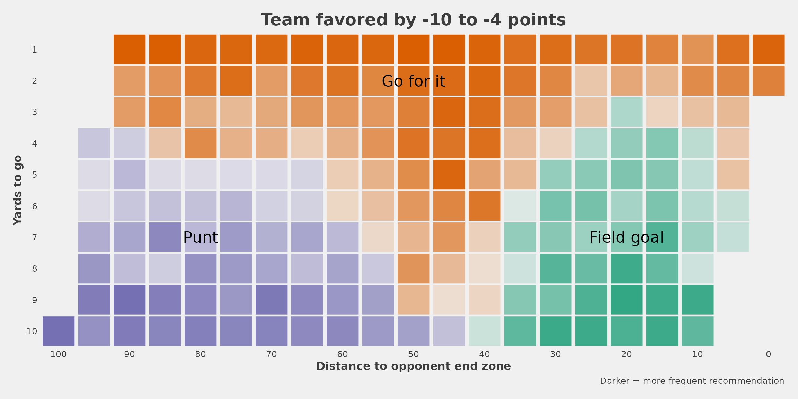

4th down research
Ben Baldwin
Source:vignettes/articles/4th-down-research.Rmd
4th-down-research.RmdFour basic examples of doing something with nfl4th
We begin by demonstrating the use of nfl4th to load all seasons for which 4th down calculations are available in one line of code.
pbp <- nfl4th::load_4th_pbp(2014:2021, fast = T) %>%
filter(down == 4)The key columns generated by the main nfl4th function, load_4th_pbp(), are go_boost, which gives the predicted gain (or loss, when negative) in win probability associated with going for it, relative to the next-best alternative (whether kicking a field goal or punting), and go, which is an indicator for whether the team went for it on a given play. Note that go_boost and go are measured in percentage points (i.e., 0 to 100) in order to make creating figures like the following easier. This means that the values for go are either 0 or 100 in every row.
Rate of going for it versus predicted benefit
Let’s make a plot that shows that teams’ likelihood of going for it in 2020 versus how large the predicted benefit would be.
pbp %>%
dplyr::filter(season == 2020) %>%
dplyr::mutate(go_boost = DescTools::RoundTo(go_boost, 0.5)) %>%
dplyr::group_by(go_boost) %>%
dplyr::summarize(go = mean(go)) %>%
dplyr::ungroup() %>%
dplyr::filter(between(go_boost, -10, 10)) %>%
dplyr::mutate(
should_go = dplyr::case_when(
go_boost > .5 ~ 1,
go_boost < -.5 ~ 0,
TRUE ~ 2)
) %>%
ggplot(aes(go_boost, go, color = as.factor(should_go))) +
geom_point(size = 5, color = "black", alpha = .5) +
geom_vline(xintercept = 0) +
geom_smooth(method = "lm", show.legend = F, se = F, size = 3)+
theme_ben +
labs(x = "Gain in win probability by going for it (nfl4th)",
y = "Go-for-it percentage",
title = glue::glue("NFL Go-for-it Rate on <span style='color:red'>4th down</span>")
) +
scale_y_continuous(breaks = scales::pretty_breaks(n = 10), expand = c(0,2)) +
scale_x_continuous(breaks = scales::pretty_breaks(n = 20), limits = c(-10, 10), expand = c(0,0)) +
annotate("text",x=-4, y= 90, label = "Should\nkick", color="red", size = 5) +
annotate("text",x=3, y= 90, label = "Should\ngo for it", color="red", size = 5) +
annotate("label",x=-6, y= 15, label = "Teams almost always kick\nwhen they should...", size = 5) +
annotate("label",x=6, y= 25, label = "...but frequently\n kick when they\nshould go for it", size = 5)
#> Warning: Removed 14 rows containing non-finite values (stat_smooth).
#> Warning: Removed 14 rows containing missing values (geom_point).
Check coaches’ alignment with the model
Here’s how to create one of the tables shown in the piece on The Athletic:
pbp %>%
dplyr::filter(season == 2020, !is.na(go_boost), !is.na(go)) %>%
dplyr::mutate(type = dplyr::case_when(
go_boost >= 4 ~ "Definitely go for it",
go_boost > 1 & go_boost < 4 ~ "Probably go for it",
go_boost >= -1 & go_boost <= 1 ~ "Toss-up",
go_boost < -1 & go_boost > -4 ~ "Probably kick",
go_boost <= -4 ~ "Definitely kick"
)) %>%
dplyr::group_by(type) %>%
dplyr::summarize(go = mean(go), n = dplyr::n()) %>%
dplyr::ungroup() %>%
dplyr::arrange(-go) %>%
gt::gt() %>%
gt::cols_label(
type = "Recommendation",
go = "Went for it %",
n = "Plays"
) %>%
gt::tab_style(
style = gt::cell_text(color = "black", weight = "bold"),
locations = list(
gt::cells_column_labels(dplyr::everything())
)
) %>%
add_gt_options() %>%
gt::fmt_number(columns = dplyr::vars(go), decimals = 0) %>%
gt::cols_align(
columns = 2:3, align = "center"
) %>%
gt::tab_header(title = "NFL team decision-making by go recommendation, 2020") %>%
gt::tab_source_note(gt::md('**Notes**: "Definitely" recommendations are greater than 4 percentage point advantage,<br> "probably" 1-4 percentage points'))| NFL team decision-making by go recommendation, 2020 | ||
| Recommendation | Went for it % | Plays |
|---|---|---|
| Definitely go for it | 72 | 221 |
| Probably go for it | 34 | 659 |
| Toss-up | 18 | 1612 |
| Probably kick | 2 | 917 |
| Definitely kick | 0 | 311 |
|
Notes: "Definitely" recommendations are greater than 4 percentage point advantage, "probably" 1-4 percentage points |
||
Thus, we can see that the model is strongly aligned to what coaches do.
Worst kick decisions of 2020
Here are the worst instances of not going for it (and instead punting or kicking a field goal) in terms of total expected win probability lost.
2020’s champion is Kliff Kingsbury.
pbp %>%
filter(
season == 2020,
go == 0,
# they tried to go for it so throw this play out
!(posteam == "ARI" & week == 3 & play_id == 2364)
) %>%
arrange(-go_boost) %>%
mutate(rank = 1 : n()) %>%
head(10) %>%
select(rank, posteam, defteam, week, qtr, ydstogo, score_differential, go_boost, desc) %>%
gt() %>%
cols_label(
rank = "", posteam = "Team", defteam = "Opp", week = "Week", qtr = "Qtr",
ydstogo = "YTG", score_differential = "Diff", desc = "Play", go_boost = "WP loss"
) %>%
tab_style(
style = cell_text(color = "black", weight = "bold"),
locations = list(cells_column_labels(everything()))
) %>%
text_transform(
locations = cells_body(vars(posteam, defteam)),
fn = function(x) web_image(url = paste0('https://a.espncdn.com/i/teamlogos/nfl/500/',x,'.png'))
) %>%
cols_width(everything() ~ px(400)) %>%
cols_width(
vars(rank) ~ px(30), vars(go_boost) ~ px(80),
vars(posteam, defteam, week, score_differential, qtr, ydstogo) ~ px(50)
) %>%
add_gt_options() %>%
fmt_number(columns = vars(go_boost), decimals = 1) %>%
cols_align(columns = 1:8, align = "center") %>%
tab_header(title = "Worst kick decisions of 2020")| Worst kick decisions of 2020 | ||||||||
| Team | Opp | Week | Qtr | YTG | Diff | WP loss | Play | |
|---|---|---|---|---|---|---|---|---|
| 1 |  |
 |
9 | 4 | 1 | -3 | 13.4 | (1:58) 5-Z.Gonzalez 49 yard field goal is No Good, Short, Center-46-A.Brewer, Holder-4-A.Lee. |
| 2 |  |
 |
18 | 4 | 1 | -12 | 9.0 | (15:00) (Punt formation) PENALTY on PIT, Delay of Game, 5 yards, enforced at PIT 46 - No Play. |
| 3 |  |
|
16 | 4 | 1 | 2 | 8.6 | (10:22) 6-M.Wishnowsky punts 44 yards to ARI 27, Center-46-T.Pepper, out of bounds. |
| 4 |  |
 |
18 | 4 | 2 | -4 | 7.9 | (10:06) 6-B.Kern punts 25 yards to BAL 15, Center-47-M.Overton, fair catch by 13-D.Duvernay. |
| 5 |  |
 |
17 | 3 | 2 | -4 | 7.7 | (3:10) 8-B.McManus 26 yard field goal is GOOD, Center-46-J.Bobenmoyer, Holder-6-S.Martin. |
| 6 | |
|
1 | 4 | 1 | -1 | 7.3 | (7:32) (Run formation) PENALTY on TEN, Delay of Game, 4 yards, enforced at TEN 34 - No Play. |
| 7 |  |
 |
12 | 1 | 1 | 0 | 7.3 | (12:18) 7-H.Butker 19 yard field goal is GOOD, Center-41-J.Winchester, Holder-5-T.Townsend. |
| 8 | |
 |
4 | 3 | 2 | -4 | 7.1 | (8:41) 2-D.Carlson 25 yard field goal is GOOD, Center-47-T.Sieg, Holder-6-A.Cole. |
| 9 |  |
 |
14 | 2 | 1 | -10 | 6.9 | (2:24) 6-T.Morstead punts 48 yards to PHI 4, Center-49-Z.Wood, out of bounds. |
| 10 |  |
 |
8 | 1 | 1 | 0 | 6.7 | (11:17) 7-Y.Koo 20 yard field goal is GOOD, Center-47-J.Harris, Holder-4-S.Hofrichter. |
NFL coaches are increasingly adhering to nfl4th recommendations
# labels on the plot
text_df <- tibble(
label = c("NFL coaches<br>in <span style='color:#00BFC4'>**2020**</span>", "NFL coaches<br>in <span style='color:#F8766D'>**2014**</span>"),
x = c(6, 8.2),
y = c(80, 37),
angle = c(10, 10),
color = c("black", "black")
)
pbp %>%
filter(vegas_wp > .2, between(go_boost, -10, 10), season %in% c(2014, 2020)) %>%
ggplot(aes(go_boost, go, color = as.factor(season))) +
geom_richtext(data = text_df,
aes(x, y, label = label, angle = angle),
color = "black", fill = NA, label.color = NA, size = 5) +
geom_vline(xintercept = 0) +
stat_smooth(method = "gam", method.args = list(gamma = 1), formula = y ~ s(x, bs = "cs", k = 10), show.legend = F, se = F, size = 4) +
# this is just to get the plot to draw the full 0 to 100 range
geom_hline(yintercept = 100, alpha = 0) +
geom_hline(yintercept = 0, alpha = 0) +
theme_fivethirtyeight()+
labs(x = "Gain in win probability by going for it",
y = "Go-for-it percentage",
subtitle = "4th down decisions in 2020 versus 2014, win prob. > 20%",
title = glue::glue("How <span style='color:red'>math</span> is changing football")) +
theme(
legend.position = "none",
plot.title = element_markdown(size = 22, hjust = 0.5),
plot.subtitle = element_markdown(size = 14, hjust = 0.5),
axis.title.x = element_text(size = 14, face="bold"),
axis.title.y = element_text(size = 14, face="bold")
) +
scale_y_continuous(breaks = scales::pretty_breaks(n = 4), expand = c(0,0)) +
scale_x_continuous(breaks = scales::pretty_breaks(n = 10), limits = c(-10, 10), expand = c(0,0)) +
annotate("text", x= -1.2, y= 70, label = "Should\nkick", color="black", size = 5) +
annotate("text", x= 1.2, y= 70, label = "Should\ngo for it", color="black", size = 5) +
geom_segment(
aes(x = -.1, y = 80, xend = -2, yend = 80),
arrow = arrow(length = unit(0.05, "npc")),
color = "black", size = 2
) +
geom_segment(
aes(x = .1, y = 80, xend = 2, yend = 80),
arrow = arrow(length = unit(0.05, "npc")),
color = "black", size = 2
)
#> Warning: Removed 24 rows containing non-finite values (stat_smooth).
For the remainder of this page, the code that generates the tables and figures won’t be shown in order to make it more readable, but all of the code can be viewed here.
Comparison of nfl4th and New York Times model recommendations
The recommendations from nfl4th are somewhat more aggressive on than New York Times. I think this is mostly because NYT assumed that a successful 4th down conversion would gain exactly the necessary yards to go and nothing more, resulting in an under-estimate of the benefit of going for 4th down. Let’s compare the recommendations using the numbers in this NYT article.

While nfl4th and NYT agree that teams should always go for 4th & 1, nfl4th also thinks this is the case for 4th-and-2 and even most 4th-and-3s. However, note that this is an oversimplification: the nfl4th plot on the left shows the most frequent recommendation at a given location, but the recommendations can change given game state. For example, it will recommend that trailing teams play more aggressively, as shown below.
nfl4th recommendations while leading and trailing
The model makes very different recommendations based on game situations. Teams that are underdogs or are trailing are told to act more aggressively to get back in the game:

nfl4th recommendations given Vegas line
Here is the use of a function that takes in a point spread and generates a recommendation chart based on previous situations involving teams favored or not favored by a similar number of points. Here is what the recommendations look like for teams that are 4-10 point underdogs. As expected, these teams are encouraged to be more aggressive, although the difference isn’t as large as I might have thought.

League behavior based on win probability
Holding the expected “go” gain constant, coaches are more likely to go for it when ahead by a lot or trailing by a lot. This makes sense as their decision is less likely to make the difference between a win and a loss (and thus open the coach up to being blamed for a loss).
#> Warning: Removed 4 rows containing non-finite values (stat_smooth).
Some team-specific numbers


Which teams were most closely aligned with the bot in 2020?
Seeing teams like the Ravens, Colts, and Browns high up here should not be surprising.

The teams that lost the most win probability in 2020 by conservative decision-making.

Timelines of teams over time
This includes a function for making the timeline for a given team, so if you’re interested in seeing another team, see the source code here.
Our Ravens: very good at this.

The Seahawks: less so!

Assorted tables and figures
Worst playoff games in terms of total WP loss
The worst playoff games since 2014 in terms of total win probability lost by conservative decisions on 4th downs. Five of these happened in 2020!
| Win probability lost by kicking in playoff games, 2014-2020 | |||||||||||
| Team | Opp | Season | Week | WP Lost | Team | Opp | Season | Week | WP Lost | ||
|---|---|---|---|---|---|---|---|---|---|---|---|
| 1 | |
|
2014 | WC | 16.5 | 11 |  |
|
2018 | WC | 11.9 |
| 2 | |
 |
2014 | DIV | 15.5 | 12 | |
|
2020 | CONF | 11.8 |
| 3 |  |
|
2019 | WC | 15.2 | 13 |  |
 |
2014 | CONF | 11.3 |
| 4 | |
|
2020 | WC | 13.5 | 14 |  |
|
2016 | DIV | 10.9 |
| 5 |  |
|
2018 | CONF | 13.0 | 15 | |
 |
2021 | NA | 10.5 |
| 6 | |
 |
2017 | WC | 12.7 | 16 | |
 |
2018 | WC | 10.1 |
| 7 | |
|
2017 | CONF | 12.3 | 17 | |
|
2020 | DIV | 9.8 |
| 8 |  |
|
2014 | WC | 12.3 | 18 |  |
|
2016 | WC | 9.6 |
| 9 | |
|
2020 | WC | 12.2 | 19 | |
|
2018 | SB | 9.5 |
| 10 | |
|
2017 | WC | 12.1 | 20 | |
|
2017 | DIV | 8.6 |
More coming, maybe. . .